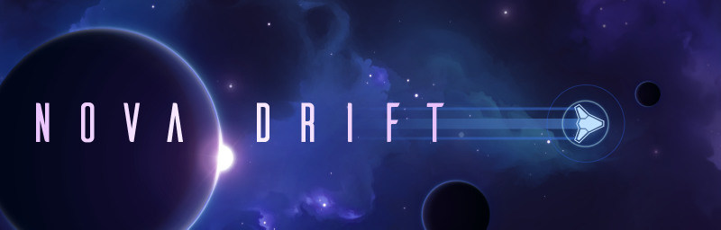

遊戲介紹
1. Nova Drift

是一款 "RogueLite" 太空射擊遊戲，飛船會在你擊敗敵人時，迅速進化，在幾分鐘內變成你想要的玩法。
有著超過200種的進化選項，不同選項之間還有著有趣的連鎖反應，可以說是隨心所欲。
巴哈介紹連結：點此前往
2. Slay the Spire (殺戮尖塔)

是一款 "RougeLike" 回合制的單人卡牌遊戲，非常的好玩，遊戲中有著遺物、卡牌跟各式各樣的敵人，
在擊敗敵人後可以獲得新的卡牌或是遺物，也有著各種事件，會觸發不同的結果，每一輪都是新的體驗。
巴哈介紹連結：點此前往